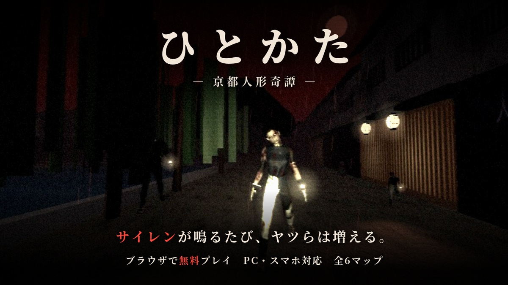

和製ホラーJapanese horror
ひとかた —京都人形奇譚—Hitokata: A Kyoto Doll Tale
舞台は夜の京都。提灯の灯る路地や寺、古い施設をさまよい、散らばった日本人形を集めて脱出します。サイレンが鳴るたびに、追ってくるヤツらは増えていきます。Night falls on Kyoto. Wander lantern-lit alleys, temples and old buildings, collecting scattered Japanese dolls to escape. Every time the siren sounds, more of them come after you.
遊び方How to play
- 建物の中を探索して日本人形を集めるExplore the buildings and collect the dolls
- 見ている間だけ止まる人形「市松」から目を離さないKeep your eyes on Ichimatsu — it only stops while you look at it
- サイレンが鳴ったら要注意。全部集めたら出口へWatch out when the siren sounds, and head for the exit once you have them all
見どころHighlights
- 京都の路地・寺・施設など全6マップSix maps, from Kyoto alleys to temples and old buildings
- サイレンのたびに敵が増える緊張感More enemies with every siren
- PS2風のざらついたグラフィックGrainy PS2-style graphics
- ブラウザで無料、PC・スマホ対応。ヘッドホン推奨Free in your browser on PC and mobile. Headphones recommended